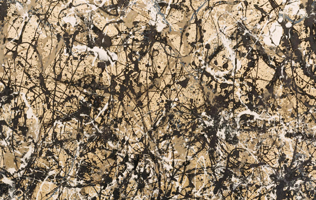
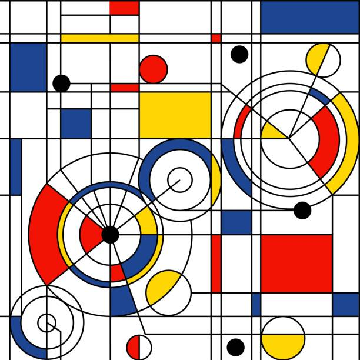
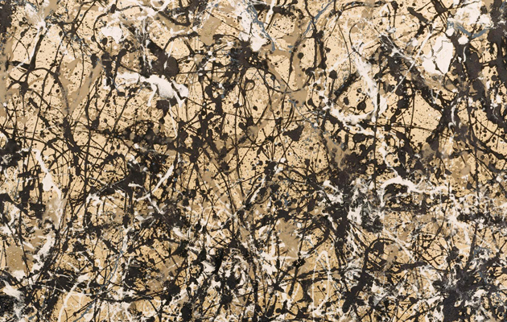
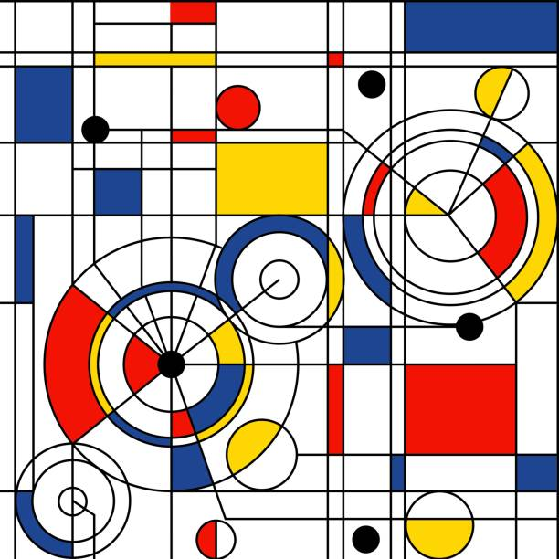

Verken de grenzeloze harmonie tussen kunst en muziek. Laat je meevoeren door kunstwerken die
geïnspireerd zijn
door melodieën, albumhoezen die een verhaal vertellen, en visuele representaties van diverse
muziekgenres.
Ontdek hoe kunst en muziek samensmelten in een visueel symfonisch avontuur.
Achtergrondverhalen
Verhalen achter kunstwerken geïnspireerd door verschillende muziekgenres.
Wassily Kandinsky - Compositie VII (1913)
Achtergrondverhaal - De zoektocht naar innerlijke harmonie: Wassily Kandinsky's "Compositie VII" is
een meesterwerk van abstracte kunst dat diepgaande emoties en abstracte vormen samenbrengt. Tijdens
het schilderen van dit werk bevond Kandinsky zich in een periode van artistieke verkenning en
persoonlijke transformatie. Hij werd beïnvloed door zijn interesse in theosofie en spirituele
filosofieën, wat zijn werk beïnvloedde. "Compositie VII" wordt vaak gezien als een visuele
uitdrukking van de zoektocht naar innerlijke harmonie en spirituele verlichting. De geometrische
vormen en levendige kleuren weerspiegelen Kandinsky's overtuiging dat kunst de ziel kon verheffen en
diepere emoties kon communiceren.
Achtergrondverhaal - Abstracte muziek en schilderkunst: Kandinsky was gefascineerd door de relatie
tussen kunst en muziek. Hij beschouwde schilderijen als composities en geloofde dat kleur en vorm
dezelfde emoties konden overbrengen als muzieknoten. "Compositie VII" wordt vaak vergeleken met een
symfonie, waarbij de verschillende elementen samenwerken om een emotionele impact te creëren. De
ritmische beweging van de vormen en kleuren roept een gevoel van dynamiek op, vergelijkbaar met de
ervaring van het luisteren naar muziek.
Jackson Pollock - Autumn Rhythm (Number 30) (1950)
Achtergrondverhaal - De dans van de verf: Jackson Pollock's "Autumn Rhythm" is een explosie van
beweging en energie. Pollock ontwikkelde zijn kenmerkende "drippainting" -techniek, waarbij hij de
verf op het doek druppelde in een bijna choreografische beweging. Dit schilderij werd gemaakt
tijdens een periode van persoonlijke en artistieke groei voor Pollock. Het weerspiegelt zijn
overgang van meer figuratieve kunst naar de abstracte expressie waar hij zo beroemd om werd. "Autumn
Rhythm" lijkt de essentie van spontaniteit en vrijheid vast te leggen.
Achtergrondverhaal - Abstracte expressie en zelfexpressie: Jackson Pollock was een pionier van de
abstracte expressionistische beweging, die de nadruk legde op spontane zelfexpressie en emotie in de
kunst. "Autumn Rhythm" is een voorbeeld van "action painting," waarbij de fysieke handeling van het
schilderen zelf een cruciale rol speelt in het overbrengen van emotie. Pollock geloofde dat zijn
schilderijen niet alleen visuele kunstwerken waren, maar ook documenten van zijn innerlijke
gedachten en gevoelens. Dit schilderij is een weerspiegeling van zijn persoonlijke reis en een
uitnodiging om de emoties en beweging te ervaren die hij in zijn werk heeft vastgelegd.
Piet Mondriaan - Broadway Boogie Woogie (1942-43)
Achtergrondverhaal - De stad en jazzmuziek: Piet Mondriaan verhuisde naar New York tijdens een
tumultueuze periode in de wereldgeschiedenis, en "Broadway Boogie Woogie" weerspiegelt zijn
fascinatie voor de bruisende energie van de stad en de opwindende ritmes van de jazzmuziek. Het
schilderij wordt vaak gezien als een eerbetoon aan de moderne architectuur en de levendige
stadscultuur van New York. De rechte lijnen en primaire kleuren vertalen de stedelijke landschappen
en het pulserende gevoel van de stad in een geometrische abstractie.
Achtergrondverhaal - De Stijl en universele harmonie: Piet Mondriaan was een van de grondleggers van
de kunstbeweging "De Stijl," die streefde naar abstractie, eenvoud en universele harmonie in kunst
en design. "Broadway Boogie Woogie" is een icoon van de neoplastische stijl, die wordt gekenmerkt
door het gebruik van rechte lijnen, primaire kleuren en geometrische vormen. Mondriaan geloofde dat
kunst de wereld kon verbeteren door harmonie te brengen, en zijn werk weerspiegelt dit streven naar
universele orde en evenwicht.
 


